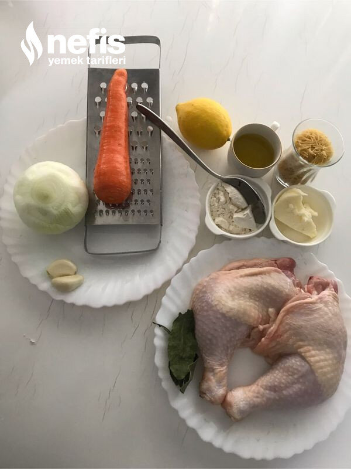

🍽️ 6-8 kişilik⏱️ Hazırlık: 20 dk🔥 Pişirme: 30 dk🏷️ Çorba Tarifleri
Malzemeler
- 2 adet tavuk butu (Tavuğun kemikli bölümleri kullanılırsa daha lezzetli oluyor)
- 2-3 adet defne yaprağı
- 6-7 su bardağı su
- 2 orta boy havuç veya 1 büyük havuç
- 1 soğan
- 1 yemek kaşığı tereyağı
- 2-3 yemek kaşığı sıvı yağ
- 1 yemek kaşığı tepeleme un
- 1 çay bardağı tel şehriye
- Yarım çay kaşığı karabiber
- 1 çay kaşığı pulbiber
- 1 çay kaşığı nane
- Yarım limon
- 2 diş sarımsak
- İstenirse bir tutam maydanoz
- Tuz
Hazırlanışı
- Önce tavukları su ve defne yaprağı ile kaynatıyoruz.
- Pişen tavuk etlerini soğuması için çıkarıyoruz.
- Soğuyan etleri didikliyoruz.
- Çorbayı pişireceğimiz tencereye tereyağını alıyoruz.
- Tereyağı eriyince sıvı yağı da ilave ediyoruz.
- İnce doğradığımız soğanları kısık ateşte 4-5 dakika kavuruyoruz.
- Sonra rendelenmiş havuçları ilave ediyoruz.
- Havuçlar yumuşayınca 1 yemek kaşığı un ilave ediyoruz.
- Un kokusu çıkana kadar kavuruyoruz. ( istenirse bu aşamada sarımsağı ilave edebiliriz).
- Üzerine tavuk suyunu yavaş yavaş, sürekli karıştırarak ilave ediyoruz.
- Kısık ateşte arada karıştırarak kaynamaya bırakıyoruz.
- Kaynadıktan sonra 1 çay bardağı şehriye, didiklediğimiz tavuk etlerini, (ezilmiş sarımsağı) ilave ediyoruz.
- Gerekirse kıvamını ayarlamak için sıcak su ilave ediyoruz.
- Karabiberi ve limonu da ekleyerek 10 dakika kadar pişiriyoruz.
- İstenirse maydanoz, nane, pulbiber de ilave ediyoruz.
- Sıcak sıcak bol şifalı çorbamızı servis ediyoruz. Afiyet olsun 😊.